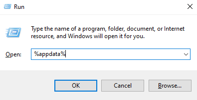
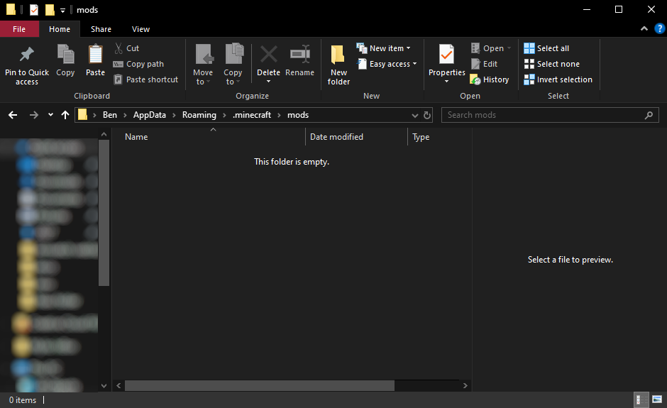
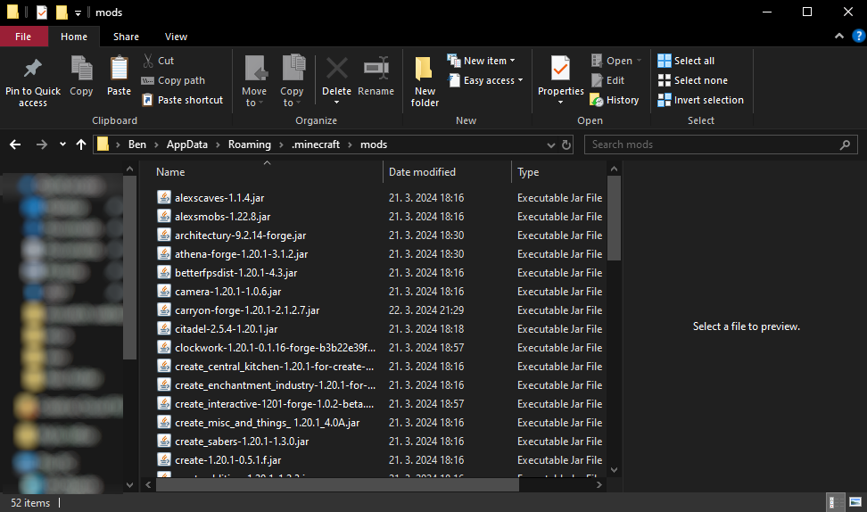
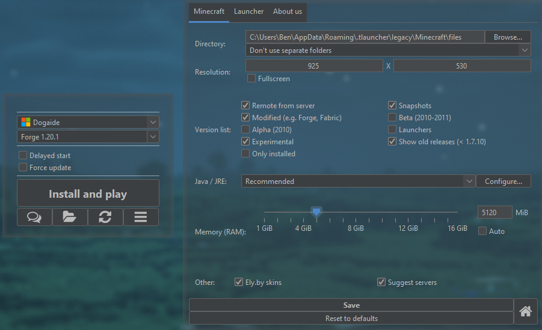
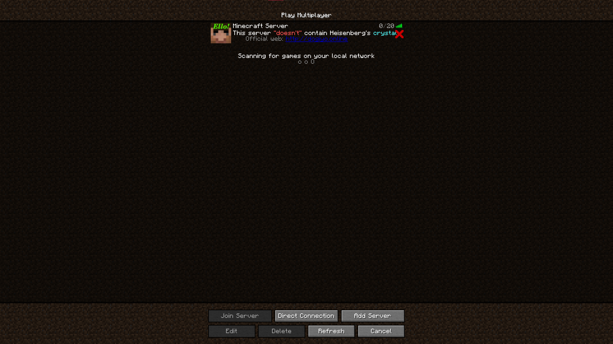

Step 1:
Download the mods here:
Step 2:
Press WIN + R to Open a gui. Type %appdata% in there.

Step 3:
Find your mods folder (It should be in .minecraft if using Bought/TLauncher MC).

Step 4:
Open your mods folder and put the downloaded file in there. Now extract it and then delete the the .zip file.

Step 5:
Open your Minecraft Launcher and set the memory(RAM) to 5000MB or more. Now start it with the version of '1.20.1-forge'.

Step 6:
If everything went well you can now add the IP: mc.dogiyo.online. You should have lagspikes for about a minute or so but it will get better after time.
